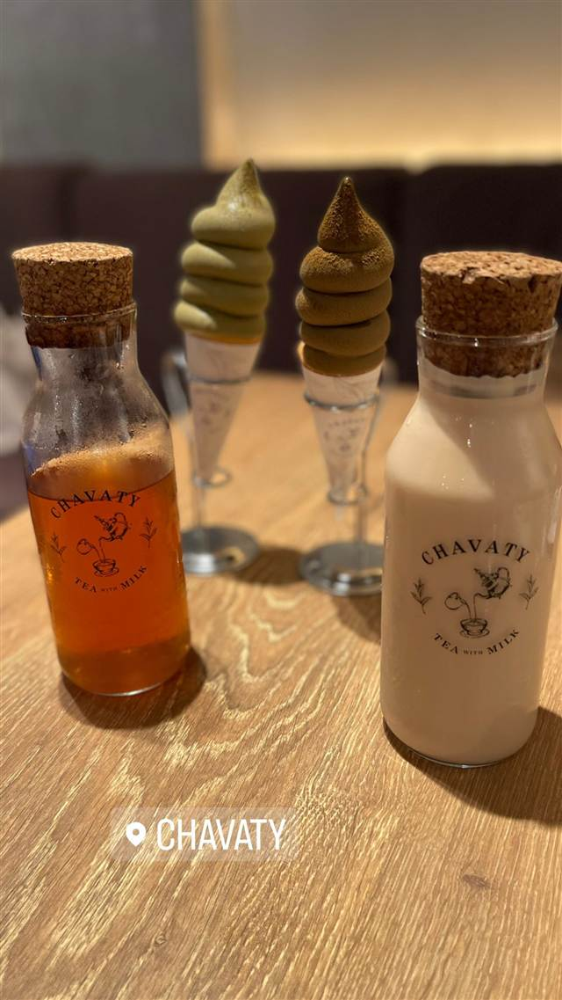
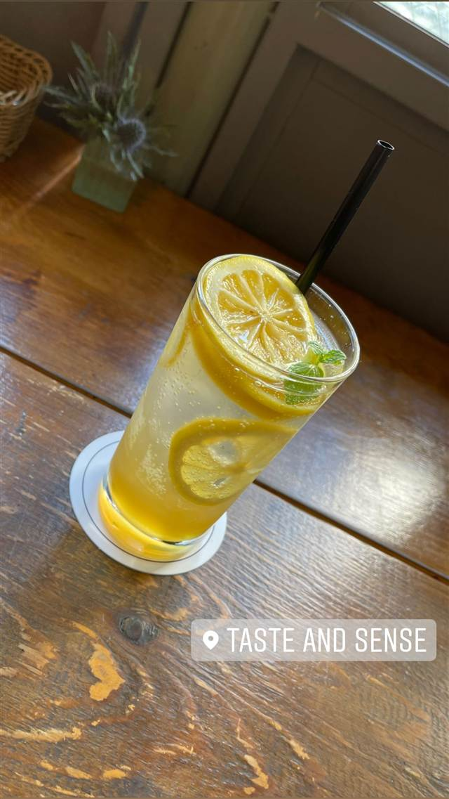

伊良コーラ 渋谷店
「クラフトコーラ」の言葉を生んだ元祖、製造工房も併設
伊良コーラ渋谷店
WHY GO
祖父の漢方薬局の資料と幻のコーラ原レシピを組み合わせ生んだ元祖クラフトコーラ
「伊良コーラ」は、広告代理店勤務だった小林隆英さんが、ネットで見つけた100年以上前のコーラ創始者ペンバートンのレシピと、和漢方職人だった祖父の工房「伊良薬工」に残された資料を組み合わせて生み出したクラフトコーラです。2018年に青山のファーマーズマーケットで移動販売を始め、「クラフトコーラ」という言葉自体を作った世界初の専門店とされています。渋谷店（キャットストリート）は2021年4月にオープンし、コーラの製造工房も併設しています。
TRIVIA
豆知識
- 屋号「伊良コーラ」は、祖父の和漢方の工房「伊良薬工」の名前に由来する
- 「クラフトコーラ」という呼び方自体を発明したのがこの店とされている
- 渋谷店には工房やコーラの自販機が併設されている
REVIEWS
世間の評判
3.44食べログ
個性的なクラフトコーラの味わい
- ハーブやスパイスを効かせた個性的な味わいを評価する声が多く見られる
- カウンター5席のみで店内は狭く混雑時は行列ができるという声がある
- 味の好みや値段に対する納得感には個人差が大きいと感じる人もいる
食べログ 口コミ140件
| 創業 | 2018年6月にレシピ完成、同年7月に青山ファーマーズマーケットで移動販売を開始。渋谷店（キャットストリート）は2021年4月29日オープン |
|---|---|
| 系譜 | コカ・コーラ発明者ペンバートンのものとされる100年以上前のレシピと、和漢方職人だった祖父・伊東良太郎氏の工房「伊良薬工」に残された資料を組み合わせて開発 |
| 看板 | クラフトコーラ（スパイスシロップ） |
| こだわり | スパイスの火入れの工程や煮込む順番を独自に工夫し、100年以上前のコーラのレシピと和漢方の知見を組み合わせて開発 |
| 掲載・評価 | 「クラフトコーラ」という言葉自体を生み出した世界初のクラフトコーラ専門メーカー・専門店とされる |
| どこから | 都心 |
| 行くなら | 行列 |
| 予算 | 昼 ～¥999 夜 ～¥999 |
| 定休日 | 無休（年末年始休みあり） |
| 予約 | 予約不可 |
| 場所 | 原宿駅／渋谷駅 東京都渋谷区神宮前5-29-12 |
| メモ | 渋谷店は営業11〜19時、コーラの製造工房を併設 |
食べたもの：クラフトコーラ
NEARBY
近い店・同じ系統の店
-
 ★
まぜそば・油そば 明治神宮前
バサノバ 原宿店（BASSANOVA）
元祖原宿ラーメンを名乗り自家製グリーンカレーペーストで作るエスニックラーメン
昼 ¥1,000～¥1,999 夜 ¥2,000～¥2,999
★
まぜそば・油そば 明治神宮前
バサノバ 原宿店（BASSANOVA）
元祖原宿ラーメンを名乗り自家製グリーンカレーペーストで作るエスニックラーメン
昼 ¥1,000～¥1,999 夜 ¥2,000～¥2,999
-
 ピザ 明治神宮前駅
ピッツァ ケベロス 明治神宮前店 (PIZZA KEVELOS)
美大卒でSAVOY仕込みの店主が焼くナポリピッツァ
昼 ¥2,000～¥2,999 夜 ¥3,000～¥3,999
ピザ 明治神宮前駅
ピッツァ ケベロス 明治神宮前店 (PIZZA KEVELOS)
美大卒でSAVOY仕込みの店主が焼くナポリピッツァ
昼 ¥2,000～¥2,999 夜 ¥3,000～¥3,999
-
 ピザ 明治神宮前
PIZZERIA CANTERA
食べログピザ百名店、全粒粉100%のナポリピッツァ
昼 ¥1,000～¥1,999 夜 ¥4,000～¥4,999
ピザ 明治神宮前
PIZZERIA CANTERA
食べログピザ百名店、全粒粉100%のナポリピッツァ
昼 ¥1,000～¥1,999 夜 ¥4,000～¥4,999
-
 メキシコ 北参道
FONDA DE LA MADRUGADA（フォンダ・デ・ラ・マドゥルガーダ）
内装をメキシコから輸入し、夕方以降はマリアッチが店内を回り生演奏する
昼 ¥3,000～¥3,999 夜 ¥6,000～¥7,999
メキシコ 北参道
FONDA DE LA MADRUGADA（フォンダ・デ・ラ・マドゥルガーダ）
内装をメキシコから輸入し、夕方以降はマリアッチが店内を回り生演奏する
昼 ¥3,000～¥3,999 夜 ¥6,000～¥7,999
-

ドリンク 表参道 CHAVATY（チャバティ） スリランカの茶園で選んだウバ茶のティーソフトクリーム 昼 ～¥999 夜 ～¥999 -

ドリンク 中目黒駅 Taste AND Sense 自家製レモネードが自慢、朝はカフェ夜はレストランの一軒 昼 ¥1,000～¥1,999